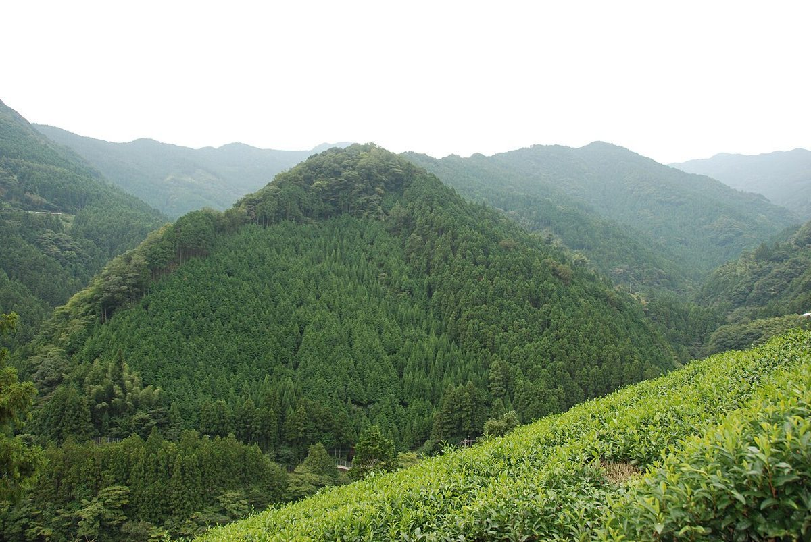
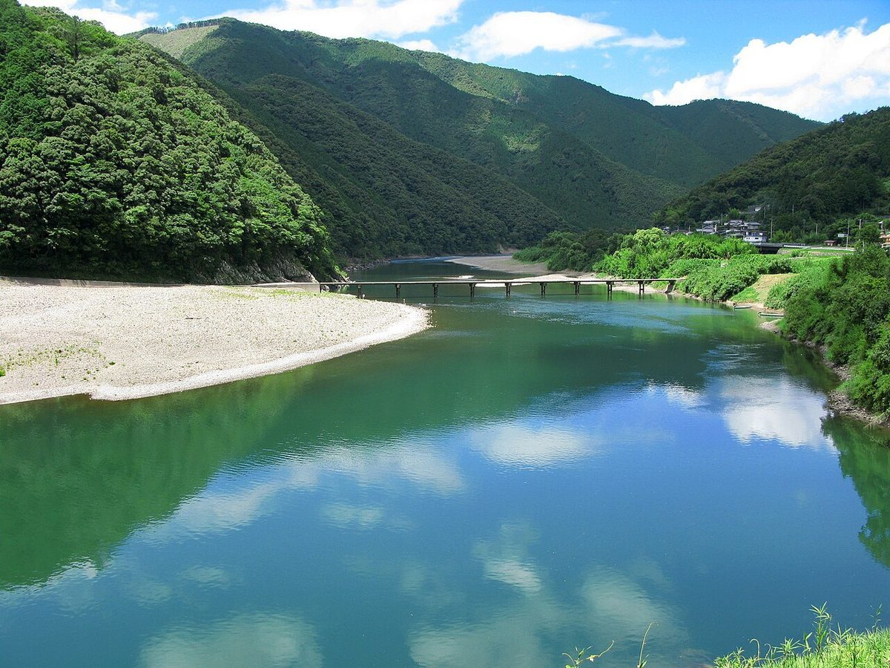
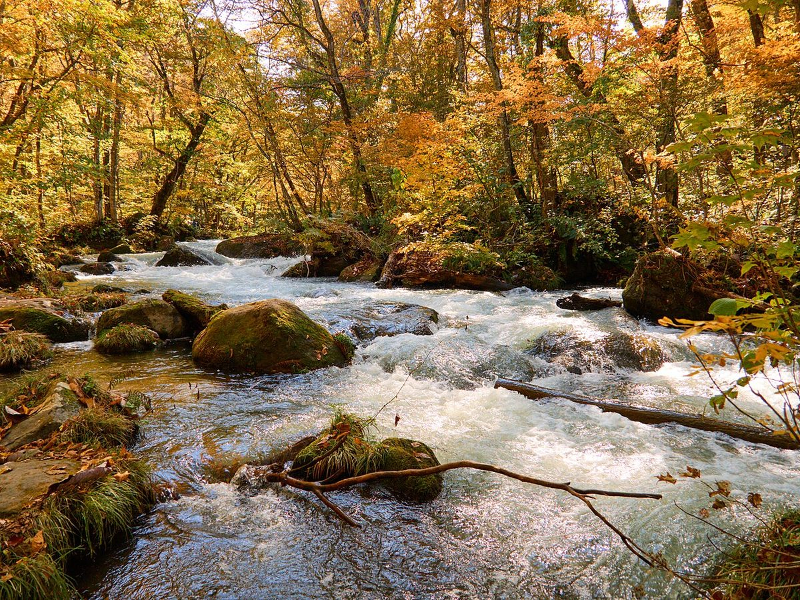
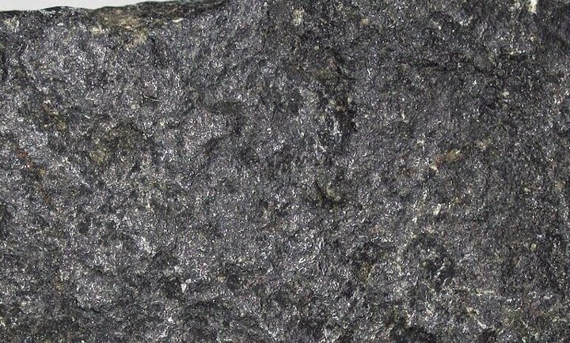

MIYOSHI / TOKUSHIMA
山あいの町に、BLACKY。
徳島県三好市池田町サラダにある、小売のお店です。お店の詳しいご案内は、いま準備を進めています。

イメージ写真VIEW
谷あいの景色(イメージ)
四国・国内各地のフリー素材です。BLACKYの周辺の写真ではありません。





NAME
「黒」のような、
どっしりした名前。
屋号の響きから、墨色と山の緑をまとったデザインを制作側で考えました。実際のお店の雰囲気に合わせて、色も写真も変更できます。